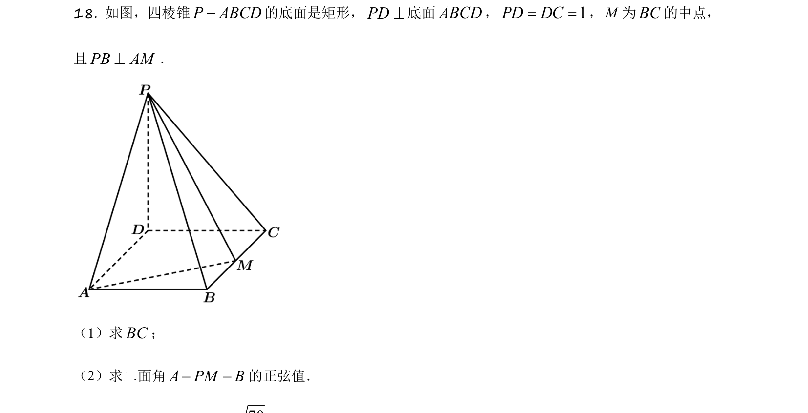
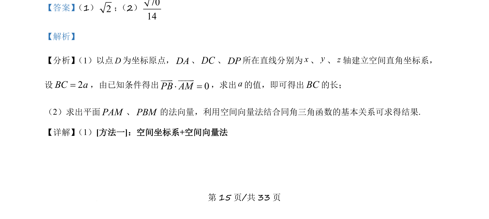
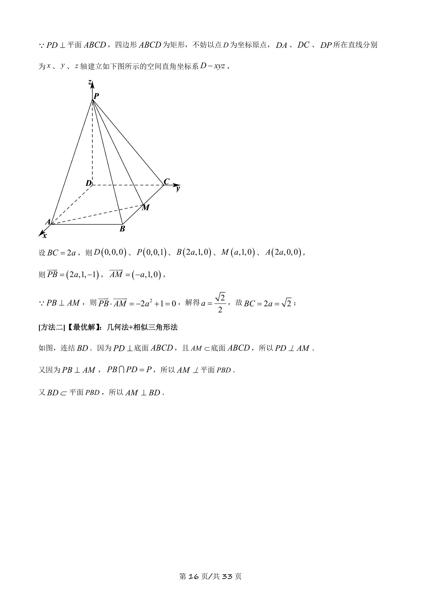
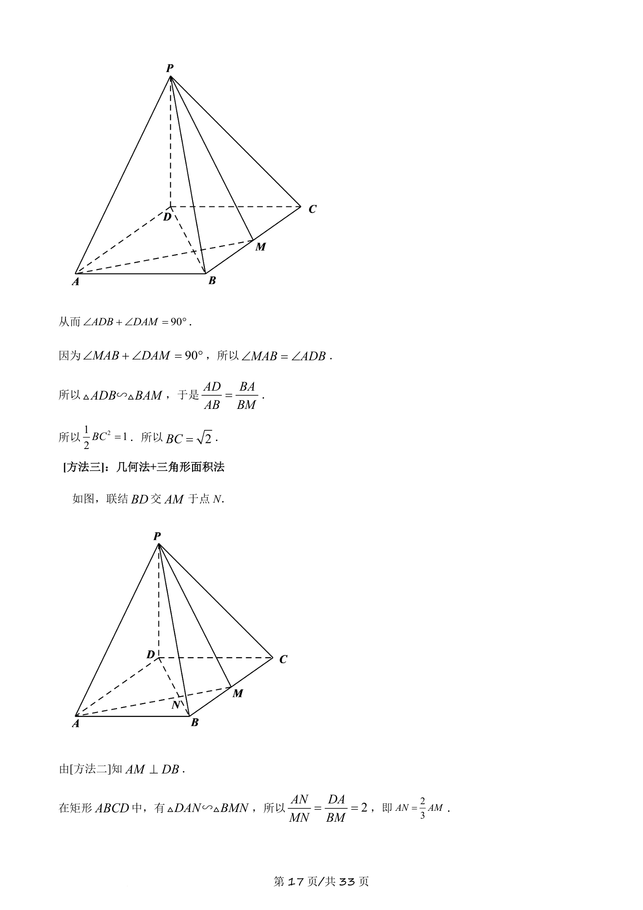
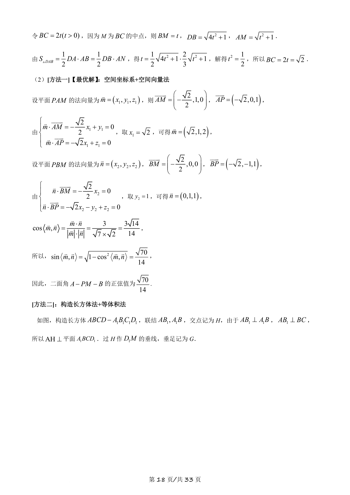
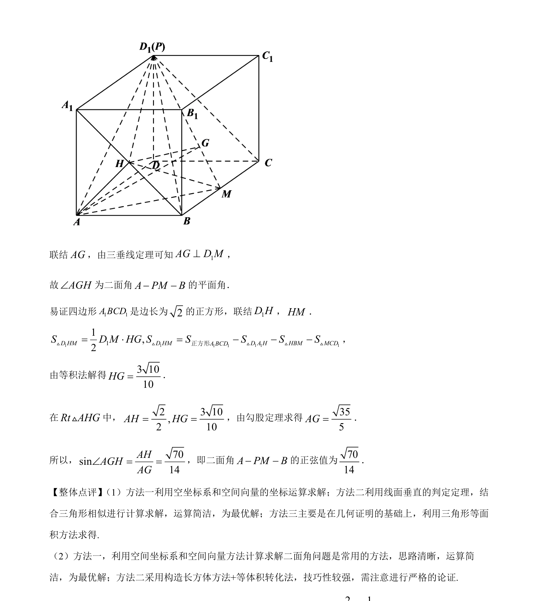

考点：空间直角坐标系 平面向量数量积 法向量 二面角

四棱锥中建立空间直角坐标系，利用向量数量积求边长，用法向量求二面角正弦值。





📄 原 PDF 第 15 页：
素材/真题/吉林/2008-2024·（吉林）数学高考真题/2021年高考数学试卷（理）（全国乙卷）（新课标Ⅰ）（解析卷）.pdf
【答案】 （1）2； （2）7014 【解析】 【分析】 （1）以点D为坐标原点，DA、DC、DP所在直线分别为x、y、z轴建立空间直角坐标系， 设2BC a=，由已知条件得出 0PB AM× =uuu v uuuu v ，求出a的值，即可得出BC的长； （2）求出平面PAM、PBM的法向量，利用空间向量法结合同角三角函数的基本关系可求得结果. 【详解】 （1）[方法一]：空间坐标系+空间向量法